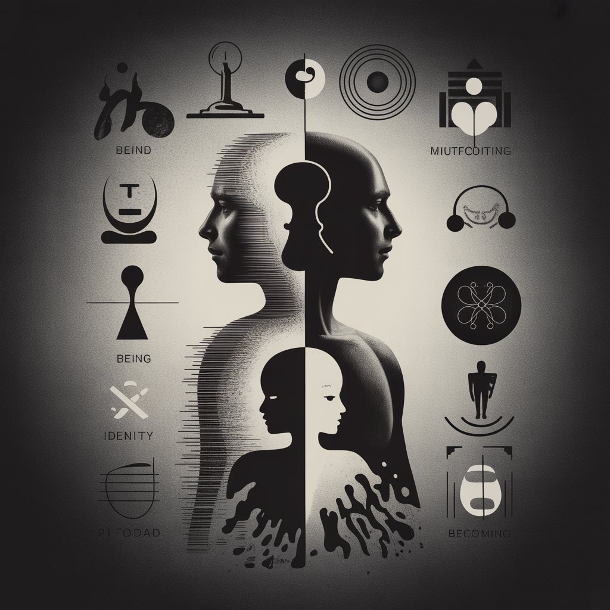

# Entre o Ser e o Estar
E Você já parou para pensar por que algumas pessoas marcam nossa vida para sempre, enquanto outras, mesmo tendo convivido conosco por muito tempo, deixam apenas rastros superficiais em nossa memória? Por que certas presenças nos transformam profundamente, enquanto outras apenas nos atravessam como uma brisa passageira? A resposta talvez esteja numa distinção filosófica que raramente fazemos conscientemente: a diferença entre quem é em nossa...